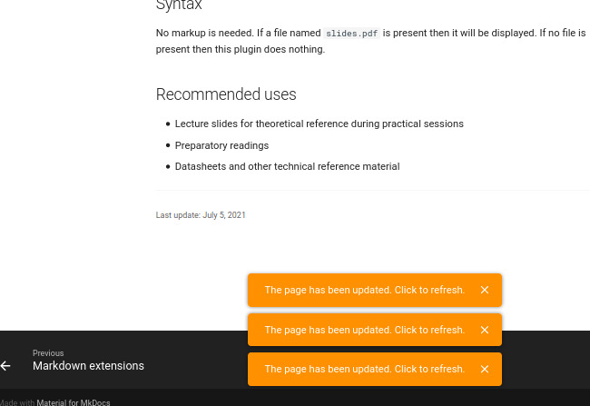

Editing first page
In this handout we will
- Edit the home page of a course to add basic information about it.
- Format documents using Markdown
The first page a student sees when they access your course should contain information about the course, like instructors' contacts, schedule and learning goals. The example course provided has a base homepage that we use at Insper. It was created from our collective experience and also based on the site of disciplines from other universities.
In this activity we will customize this page to a course of your liking.
Finding yourself
All courses based on Active Handout follow the same basic structure:

- / : root directory
README.md: README file that describes the repositorycontent/: This is where we put course materialsmkdocs.yml: Webpage config file (we should edit this file to add a new page).github/: Github actions config file (where we configure the autodeploy)requirements.txt: Python packages to build a local environment
Inside the content/ folder we find a index.md file. This file contains the home page of our course. Let's start working on it.
Task
Open your fork in the browser and enter the content/ folder. Then, click on index.md to view its contents.
Task
In a second tab or window, open the webpage of your course materials. This is the address you've written in the previous section. It is formed by https://your-username.github.io/repository-name.
index.md is a Markdown file. Basic formatting is written in plain text and is supposed to be readable without using other tools.
Markdown tips
If you need, we created a small markdown reference:
Task
Click on the Edit this file button (a small pen icon besides Raw and Download ). Edit only the first part of the file to reflect a course of your liking. You should edit the begin of the file up to the Course meetings item.
Video
Progress
Continue
After editing the file we need to save them so Active Handout can build the final website. The process is illustrated in the Figure below.
Task
When finished editing click on Commit changes at the bottom of the page. This will trigger a rebuild process of your course materials. This is automatic and takes about 1 minute.

Tip
You will get a notification on the webpage indicating that it was updated. This feature is included on the Insper Active Handout extensions.

Tools
On the process to generate the final webpage we are using the fallowing tools:
- MkDocs: Generate a static site from markdown files
- Material for MkDocs: The webpage theme
- Github actions: CI/CD to deploy the webpage
- Insper Active-handout: A set of config/extensions to the mkdocs/material to improve the use on a handout.
Extras
While you wait you can:
- Edit the rest of the
index.mdfile; - Explore some of insper's disciplines that use this tool: